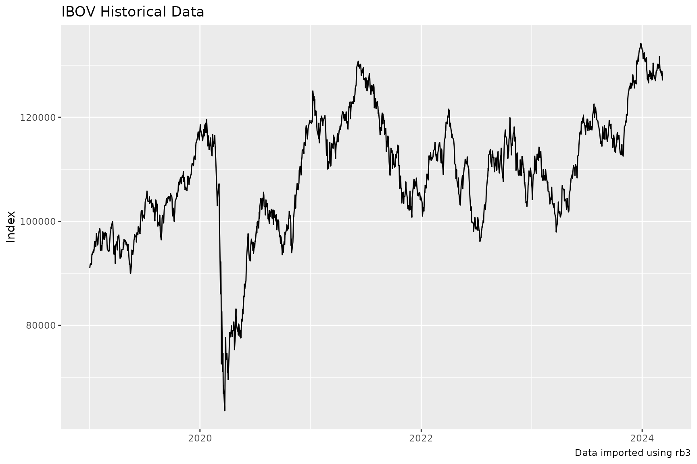
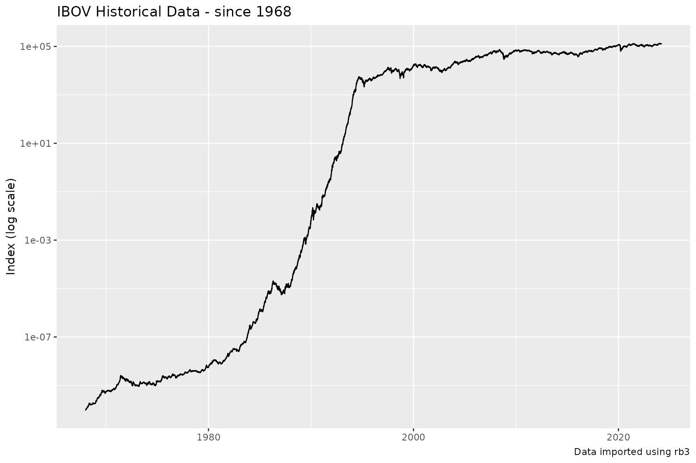
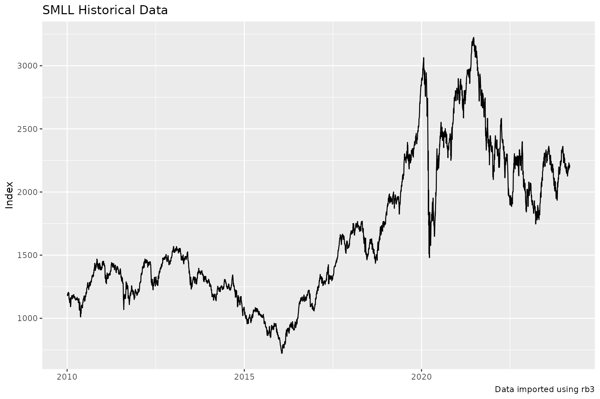

rb3 comes with a diverse range of functions to explore the index delivered by the B3 Exchange. These functions will be presented here.
B3 Indexes
The function rb3::indexes_get list the names of available indexes.
indexes_get()
#> [1] "AGFS" "BDRX" "GPTW" "IBOV" "IBRA" "IBSD" "IBXL" "IBXX" "ICO2" "ICON"
#> [11] "IDIV" "IDVR" "IEEX" "IFIL" "IFIX" "IFNC" "IGCT" "IGCX" "IGNM" "IMAT"
#> [21] "IMOB" "INDX" "ISEE" "ITAG" "IVBX" "MLCX" "SMLL" "UTIL"Indexes Composition and Weights
The composition of B3 indexes are available through the function rb3::index_weights_get. This function returns a data.frame with the current compostion of the requested index, all symbols that compound the index, their weights and theoretical position. Here the IBOVESPA (IBOV) Index has its composition listed.
index_weights_get("IBOV")
#> # A tibble: 87 × 3
#> symbol weight position
#> <chr> <dbl> <dbl>
#> 1 ABEV3 0.0264 4394245879
#> 2 ALOS3 0.00618 532616595
#> 3 ALPA4 0.00078 176733968
#> 4 ARZZ3 0.00176 62305891
#> 5 ASAI3 0.00798 1349217892
#> 6 AZUL4 0.00229 327593725
#> 7 B3SA3 0.0354 5602790110
#> 8 BBAS3 0.0344 1420949112
#> 9 BBDC3 0.0100 1500728902
#> 10 BBDC4 0.0384 5146576868
#> # ℹ 77 more rowsThe IBr100 Index (IBXX)
index_weights_get("IBXX")
#> # A tibble: 100 × 3
#> symbol weight position
#> <chr> <dbl> <dbl>
#> 1 ABEV3 0.0250 4394245879
#> 2 ALOS3 0.00586 532616595
#> 3 ALPA4 0.00074 176733968
#> 4 ARZZ3 0.00167 62305891
#> 5 ASAI3 0.00757 1349217892
#> 6 AURE3 0.00167 301966319
#> 7 AZUL4 0.00217 327593725
#> 8 B3SA3 0.0336 5602790110
#> 9 BBAS3 0.0326 1420949112
#> 10 BBDC3 0.00951 1500728902
#> # ℹ 90 more rowsThe Small Caps Index (SMLL)
index_weights_get("SMLL")
#> # A tibble: 116 × 3
#> symbol weight position
#> <chr> <dbl> <dbl>
#> 1 AALR3 0.00027 7916084
#> 2 ABCB4 0.006 74288668
#> 3 AESB3 0.0130 317103937
#> 4 AGRO3 0.00567 63773043
#> 5 ALOS3 0.0471 532616595
#> 6 ALPA4 0.00596 176733968
#> 7 ALUP11 0.0153 145652313
#> 8 AMAR3 0.00039 31628685
#> 9 AMBP3 0.00301 55695890
#> 10 ANIM3 0.00381 256834750
#> # ℹ 106 more rowsIndex Composition
rb3::index_comp_get returns a vector with symbols that compound the given index.
index_comp_get("SMLL")
#> [1] "AALR3" "ABCB4" "AESB3" "AGRO3" "ALOS3" "ALPA4" "ALUP11" "AMAR3"
#> [9] "AMBP3" "ANIM3" "ARML3" "ARZZ3" "AZUL4" "BEEF3" "BHIA3" "BLAU3"
#> [17] "BMOB3" "BPAN4" "BRAP4" "BRSR6" "CAML3" "CASH3" "CBAV3" "CEAB3"
#> [25] "CIEL3" "COGN3" "CSMG3" "CURY3" "CVCB3" "CYRE3" "DASA3" "DIRR3"
#> [33] "DXCO3" "ECOR3" "ENAT3" "ESPA3" "EVEN3" "EZTC3" "FESA4" "FLRY3"
#> [41] "FRAS3" "GFSA3" "GGPS3" "GOAU4" "GOLL4" "GRND3" "GUAR3" "HBSA3"
#> [49] "IFCM3" "IGTI11" "INTB3" "IRBR3" "JALL3" "JHSF3" "KEPL3" "LAVV3"
#> [57] "LEVE3" "LJQQ3" "LOGG3" "LUPA3" "LWSA3" "MATD3" "MBLY3" "MDIA3"
#> [65] "MILS3" "MLAS3" "MOVI3" "MRFG3" "MRVE3" "MTRE3" "MYPK3" "ODPV3"
#> [73] "ONCO3" "ORVR3" "PCAR3" "PETZ3" "PGMN3" "PLPL3" "PNVL3" "POMO4"
#> [81] "POSI3" "PTBL3" "QUAL3" "RANI3" "RAPT4" "RCSL3" "RECV3" "ROMI3"
#> [89] "RRRP3" "SAPR11" "SBFG3" "SEER3" "SIMH3" "SLCE3" "SMFT3" "SMTO3"
#> [97] "SOMA3" "SRNA3" "STBP3" "TAEE11" "TASA4" "TEND3" "TGMA3" "TRIS3"
#> [105] "TTEN3" "TUPY3" "UNIP6" "USIM5" "VAMO3" "VIVA3" "VLID3" "VULC3"
#> [113] "VVEO3" "WIZC3" "YDUQ3" "ZAMP3"Index by Segment
rb3::index_by_segment_get returns a data.frame with all stocks that are in the index, their economic segment, weights, position and segment weight in the index.
index_by_segment_get("IBOV")
#> # A tibble: 86 × 6
#> symbol segment weight segment_weight position refdate
#> <chr> <chr> <dbl> <dbl> <dbl> <date>
#> 1 WEGE3 Bens Indls / Máqs e Equips 0.0254 0.0254 1.48e9 2024-03-11
#> 2 EMBR3 Bens Indls / Mat Transporte 0.00914 0.00914 7.35e8 2024-03-11
#> 3 AZUL4 Bens Indls/Transporte 0.00187 0.0208 3.28e8 2024-03-11
#> 4 CCRO3 Bens Indls/Transporte 0.00638 0.0208 9.95e8 2024-03-11
#> 5 RAIL3 Bens Indls/Transporte 0.0125 0.0208 1.22e9 2024-03-11
#> 6 BRFS3 Cons N Básico / Alimentos… 0.0130 0.0285 1.68e9 2024-03-11
#> 7 JBSS3 Cons N Básico / Alimentos… 0.0114 0.0285 1.13e9 2024-03-11
#> 8 MRFG3 Cons N Básico / Alimentos… 0.00148 0.0285 3.32e8 2024-03-11
#> 9 BEEF3 Cons N Básico / Alimentos… 0.00081 0.0285 2.61e8 2024-03-11
#> 10 SMTO3 Cons N Básico / Alimentos… 0.00183 0.0285 1.42e8 2024-03-11
#> # ℹ 76 more rowsIndexes Time Series
rb3 downloads data from B3 website to build time series for B3 indexes.
The function rb3::index_get downloads data from B3 for the given index name and returns data structured in a data.frame. The index names are obtained with rb3::indexes_get function.
index_name <- "IBOV"
index_data <- index_get(index_name, as.Date("2019-01-01"))
head(index_data)
#> # A tibble: 6 × 3
#> refdate index_name value
#> <date> <chr> <dbl>
#> 1 2019-02-01 IBOV 97861.
#> 2 2019-03-01 IBOV 94604.
#> 3 2019-04-01 IBOV 96054.
#> 4 2019-07-01 IBOV 101340.
#> 5 2019-08-01 IBOV 102126.
#> 6 2019-10-01 IBOV 104053.The returned data.frame has three columns: refdate, index_name and value.
index_data |>
ggplot(aes(x = refdate, y = value)) +
geom_line() +
labs(
x = NULL, y = "Index",
title = str_glue("{index_name} Historical Data"),
caption = str_glue("Data imported using rb3")
)
The IBOVESPA index starts at 1968 and the series is adjusted for all economic events the that affected the Brazilian currency in the 80-90’s decades.
index_data <- index_get(index_name, as.Date("1968-01-01"))
index_data |>
ggplot(aes(x = refdate, y = value)) +
geom_line() +
scale_y_log10() +
labs(
x = NULL, y = "Index (log scale)",
title = str_glue("{index_name} Historical Data - since 1968"),
caption = str_glue("Data imported using rb3")
)
The y-axis was transformed to log scale in order to get the visualization improved.
Change index_name to get data for other indexes, for example, the Small Caps Index SMLL.
index_name <- "SMLL"
index_data <- index_get(index_name, as.Date("2010-01-01"))
index_data |>
ggplot(aes(x = refdate, y = value)) +
geom_line() +
labs(
x = NULL, y = "Index",
title = str_glue("{index_name} Historical Data"),
caption = str_glue("Data imported using rb3")
)
Indexes Last Update
rb3::indexes_last_update returns the date where the indexes have been last updated.
indexes_last_update()
#> [1] "2024-03-11"